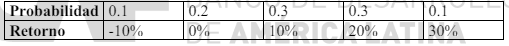
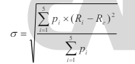

El "tipo libre de riesgo" representa la tasa de retorno que los inversores esperan obtener de una inversión totalmente segura, es decir, una inversión que, en teoría, no tiene riesgo de pérdida. Este concepto es fundamental en el ámbito de las finanzas, particularmente en la evaluación y gestión de inversiones. Comúnmente, los bonos del gobierno de naciones con economías estables y robustas, como los bonos del Tesoro de Estados Unidos, se consideran prácticamente libres de riesgo. La tasa de interés que estos instrumentos ofrecen sirve como la base para el cálculo de las expectativas de retorno en inversiones más arriesgadas.
El tipo libre de riesgo es un componente esencial en varios modelos de selección de carteras, especialmente en el Modelo de Valoración de Activos de Capital (CAPM). Este modelo postula que el retorno esperado de un activo es una función de su riesgo sistemático, medido por su beta, además de una prima de riesgo que se espera por asumir un mayor riesgo comparado con una inversión libre de riesgo. De esta manera, el CAPM formula que:
R_i = R_f + β_i × (R_m − R_f)
Al evaluar diferentes opciones de inversión, el tipo libre de riesgo sirve como un punto de referencia crucial. Permite a los inversores determinar si la prima de riesgo ofrecida por inversiones más arriesgadas justifica el riesgo adicional en comparación con una opción segura. Por ejemplo, si una acción promete un retorno significativamente mayor que el tipo libre de riesgo, pero también tiene un alto beta, los inversores pueden evaluar si la expectativa de mayor retorno compensa el posible aumento en la volatilidad y el riesgo.
La CML surge de la aplicación del Modelo de Valoración de Activos de Capital (CAPM). Se define como la línea que parte del tipo de retorno del activo libre de riesgo (intercepto y) y toca tangencialmente la curva de la frontera eficiente de los activos riesgosos. La pendiente de la CML es el premio por unidad de riesgo, medido en términos de desviación estándar (riesgo total), y es más alta que cualquier otra posible combinación de activos riesgosos sin incluir el activo libre de riesgo.
La fórmula para la CML es:
𝑅𝑝 = R_f + ( R_m − R_f / σ_m) x σ_p
donde:
Uno de los factores más significativos es la tolerancia al riesgo del inversor. Algunos inversores son naturalmente más aversos al riesgo y prefieren inversiones más seguras como bonos o cuentas de ahorro, mientras que otros están dispuestos a aceptar un mayor nivel de riesgo con la esperanza de lograr mayores retornos a través de acciones o fondos de inversión.
Los objetivos de inversión pueden variar ampliamente, desde la acumulación de un fondo para la jubilación, la educación de los hijos, la compra de una vivienda, hasta la generación de ingresos estables durante la jubilación. Estos objetivos afectan directamente el tipo de activos que el inversor elige, así como la estructura de la cartera.
El horizonte temporal de inversión se refiere al tiempo que un inversor planea mantener su inversión antes de liquidarla para su uso. Los inversores con un horizonte a largo plazo pueden estar más inclinados a invertir en activos con mayor volatilidad, como las acciones, ya que tienen más tiempo para recuperarse de las fluctuaciones del mercado.
Las necesidades de liquidez reflejan la facilidad con la que un inversor necesita convertir sus inversiones en efectivo. Los inversores que requieren acceso inmediato a su dinero pueden preferir inversiones más líquidas, aunque estas puedan ofrecer rendimientos más bajos.
Las implicaciones fiscales de las inversiones también pueden influir en las preferencias. Algunos activos ofrecen beneficios fiscales que pueden ser atractivos para ciertos inversores, afectando así su selección de inversiones.
Entender estas preferencias es esencial para la personalización de la gestión de carteras. Los asesores financieros y los gestores de carteras utilizan esta información para alinear las carteras con los objetivos personales y financieros del inversor, asegurando que las estrategias de inversión no solo sean efectivas sino también adecuadas para el perfil individual del inversor.
Las decisiones finales de inversión de un inversor individual marcan la culminación del proceso de planificación y análisis financiero. Estas decisiones son críticas ya que determinan cómo se distribuyen los recursos del inversor entre diferentes activos o estrategias de inversión, influyendo directamente en el logro de sus objetivos financieros a largo plazo.
Antes de tomar una decisión final, los inversores deben evaluar cuidadosamente diversas alternativas de inversión disponibles. Esto incluye analizar los rendimientos esperados, los riesgos asociados, la liquidez de los activos y las implicaciones fiscales. La elección de inversiones que mejor se alinean con sus metas y perfil de riesgo es fundamental.
Una de las decisiones más importantes es la diversificación adecuada de la cartera para mitigar riesgos. La decisión de cuánto diversificar involucra no solo la selección de diferentes clases de activos, sino también variar dentro de las mismas clases, como diferentes sectores, geografías, o estilos de gestión en acciones.
Los inversores deben decidir el balance óptimo entre riesgo y retorno basado en su tolerancia al riesgo y horizonte temporal. Esto podría implicar decidir entre inversiones de alto riesgo y alto retorno y aquellas que son más seguras pero ofrecen rendimientos más bajos.
Las decisiones finales no son estáticas; requieren revisión y ajustes regulares. Los cambios en el mercado, en la situación financiera personal o en los objetivos a largo plazo pueden llevar a un inversor a reevaluar y modificar su cartera.
Muchos inversores buscan el consejo de asesores financieros o gestores de cartera para tomar decisiones informadas. Estos expertos pueden proporcionar perspectivas valiosas basadas en análisis de mercado profundos y experiencia en la gestión de inversiones.
Una vez tomadas las decisiones, la implementación efectiva es crucial. Esto incluye la ejecución de transacciones de compra o venta de activos, la monitorización continua del desempeño de la inversión, y la gestión de la cartera en respuesta a las condiciones cambiantes del mercado y a las necesidades personales.
Dada la siguiente distribución de retornos de un activo:
a) Calcula el retorno esperado y la desviación típica
b) ¿Cuál es el riesgo de pérdida?
a) El retorno esperado, en este caso, podemos calcularlo directamente como la esperanza matemática de la distribución de retornos:
Re = p1 × R1+ p2 × R2 + p3 × R3+ p4 × R4 + p5 × R5 =
0.1 × (-10%) + 0.2 × 0% + 0.3 × 10% + 0.3 × 20% +0.1 × 30% = 11%.
La volatilidad la calculamos con la fórmula
queda un resultado de σ = 15.8%.
b) Bajo una distribución discreta (esto es, si los únicos valores posibles de los retornos son los cinco valores de la tabla), podemos calcular el riesgo de pérdida como la probabilidad de que el retorno sea negativo que, en este caso, es sólo de 10%, ya que sólo uno de los cinco valores posibles del retorno es menor que cero.